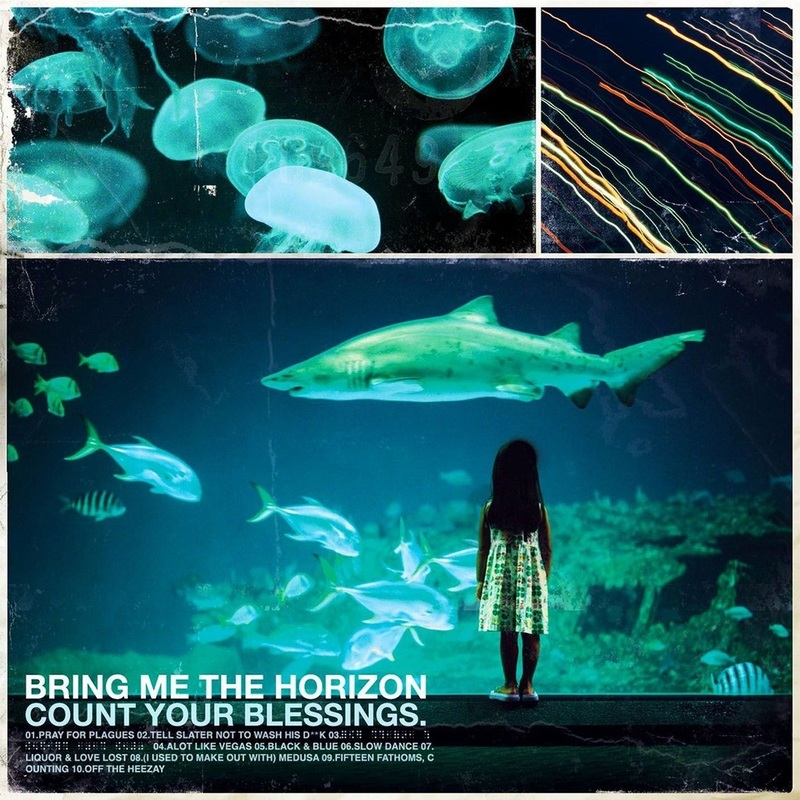
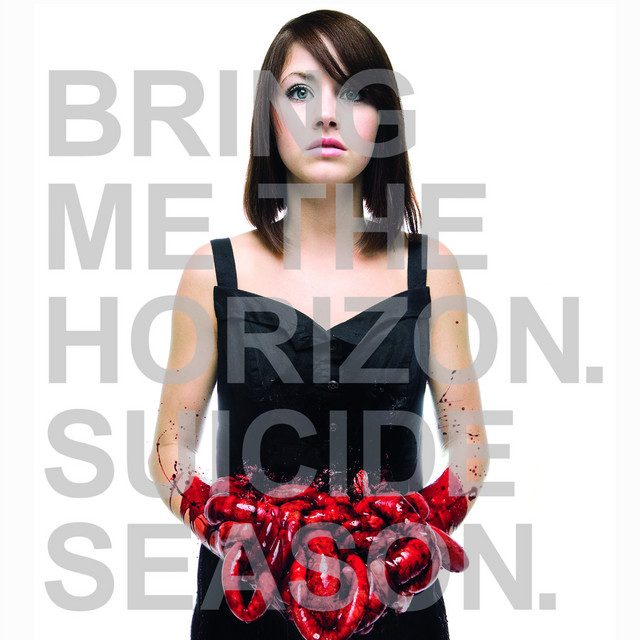
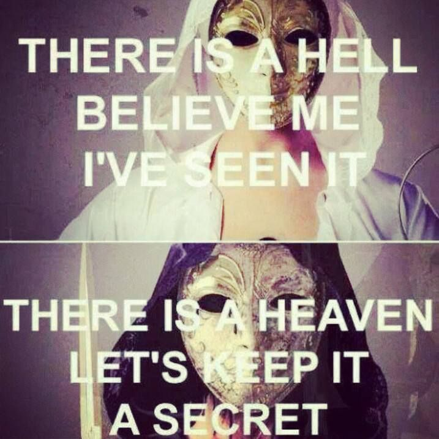
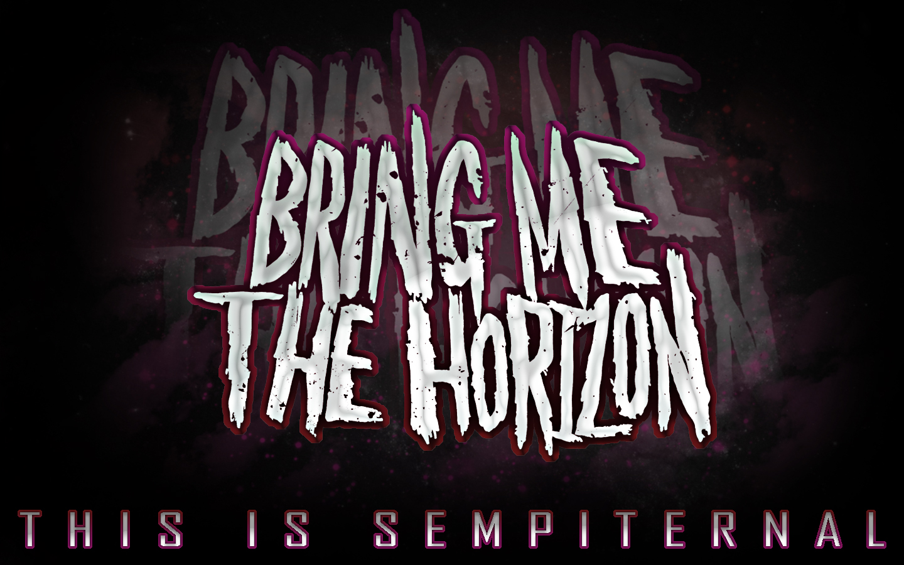
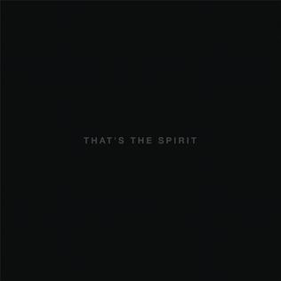
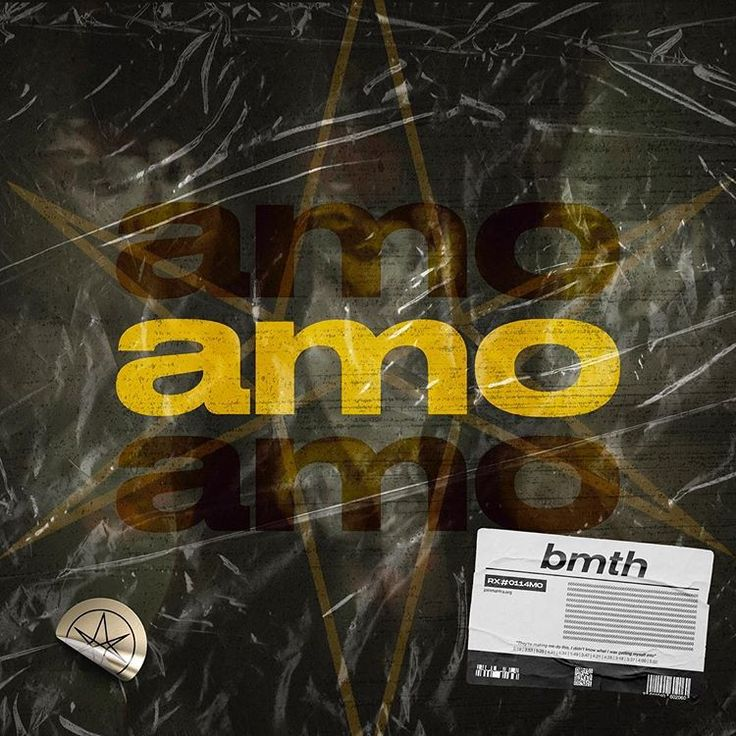

Bring Me the Horizon (BMTH) adalah grup musik rock Inggris yang dibentuk di Sheffield pada tahun 2004. Saat ini grup ini digawangi vokalis Oliver Sykes, gitaris Lee Malia, bassis Matt Kean, dan drummer Matt Nicholls. Saat ini mereka berada di bawah kontrak dengan RCA Records secara global dan Columbia Records secara eksklusif di Amerika Serikat.
Grup musik ini merilis album debutnya, Count Your Blessings, pada tahun 2006. Album ini justru mendapat kritikan pedas setelah dirilis. Dengan demikian mereka memutuskan undur diri dari gaya bermusik kontroversial mereka dengan keluarnya album Suicide Season (2008), yang menjadi titik balik kreativitas grup musik itu. Darinya mereka mendapat kritikan dan nilai komersial lebih baik. Album ketiga mereka, There Is a Hell Believe Me I've Seen It. There Is a Heaven Let's Keep It a Secret., dirilis tahun 2010, telah membawa mereka ke kancah musik internasional, dan menggabungkan pengaruh dari musik klasik, electronica, dan pop. Album debutnya yang dirilis di label besar, Sempiternal (2013) mendapat sertifikasi Emas di Australia (35.000 kopi) dan Perak di Inggris (60.000 kopi). That's the Spirit (2015) memulai debutnya pada posisi kedua di UK Albums Chart dan US Billboard 200.[1][2] Album studio keenam mereka Amo (2019) memuncaki posisi pertama di Britania Raya. Di samping enam album studio ini, mereka juga merilis dua EP dan dua album konser. Mereka telah mengantongi empat penghargaan Kerrang!, termasuk dua untuk Best British Band dan satu untuk Best Live Band. Mereka juga dinominasikan di Grammy.
Karya-karya BMtH yang pertama, termasuk pada album debutnya, Count Your Blessings, merupakan lagu-lagu deathcore, tetapi mereka mulai mengadopsi gaya metalcore yang lebih eklektik di album-album berikutnya. Kemudian, That's the Spirit menandai pergeseran gaya bermusik mereka ke rock yang kurang agresif.[3] Pada album Amo, gaya bermusik mereka berubah menjadi electronica, pop, dan hip hop.
Album
1. Count Your Blessings

Daftar Lagu
1. Pray for Plagues
2. Tell Slater Not to Wash His Dick
3. For Stevie Wonder's Eyes Only (Braille)
4. A Lot Like Vegas
5. Black & Blue
6. Slow Dance
7. Liquor & Love Lost
8. (I Used to Make Out with) Medusa
9. Fifteen Fathoms, Counting
10. Off the Heezay
Album
2. Suicide Seasons

Daftar Lagu
1. The Comedown
2. Chelsea Smile
3. It Was Written in Blood
4. Death Breath
5. Football Season Is Over (Ft. JJ Peters)
6. Sleep with One Eye Open
7. Diamonds Aren't Forever
8. The Sadness Will Never End (Ft. Sam Carter)
9. No Need for Introductions, I've Read About Girls Like You on the Backs of Toilet Doors
10. Suicide Season
Album
3. There Is a Hell Believe Me I've Seen It. There Is a Heaven Let's Keep It a Secret

Daftar Lagu
1. Crucify Me (featuring Lights)
2. Anthem
3. Never Ends
4. Fuck
5. Don't Go (featuring Lights)
6. Home Sweet Hole
7. Alligator Blood
8. Visions
9. Blacklist
10. Memorial
11. Blessed With a Curse
12. The Fox and the Wolf (featuring Josh Scogin)
Album
4. Sempiternal

Daftar Lagu
1. Can You Feel My Heart
2. The House of Wolves
3. Empire (Let Them Sing)
4. Sleepwalking
5. Go to Hell, for Heaven's Sake
6. Shadow Moses
7. And the Snakes Start to Sing
8. Seen It All Before
9. Antivist
10. Crooked Young
11. Hospital for Souls
Album
5. That's the Spirit

Daftar Lagu
1. Doomed
2. Happy Song
3. Throne
4. True Friends
5. Follow You
6. What You Need
7. Avalanche
8. Run
9. Drown
Album
6. Amo

Daftar Lagu
1. I Apologise If You Feel Something
2. Mantra
3. Nihilist Blues" (featuring Grimes)
4. In the Dark
5. Wonderful Life" (featuring Dani Filth)
6. Ouch
7. Medicine
8. Sugar Honey Ice & Tea
9. Why You Gotta Kick Me When I'm Down?
10. Fresh Bruises
11. Mother Tongue
12. Heavy Metal" (featuring Rahzel)
13. I Don't Know What to Say
3 Lagu Bring Me The Horizon Yang Paling Banyak Di dengar
1. Can't You Feel My Hearth
2. Throne
3. Drown
Oliver Scott "Oli" Sykes (lahir 20 November 1986) adalah musisi, pencipta lagu, pengusaha, dan desainer pakaian yang berasal dari Inggris, Britania
Raya. Ia dikenal sebagai vokalis grup musik Metal Bring Me the Horizon serta merupakan pendiri perusahaan pakaian Drop Dead Clothing. Ia juga menciptakan novel grafis berjudul Raised by Raptors bersama seniman Drop Dead Clothing Ben Ashton-Bell.
Bring Me the Horizon dibentuk oleh Sykes pada 2004.[5] Album debutnya, Count Your Blessings, dirilis pada tahun 2006. Kemudian, Suicide Season pada tanggal 29 September 2008 serta There Is a Hell... pada tanggal 4 Oktober 2010. Album studio keempat mereka, Sempiternal, dirilis pada 1 April 2013 yang menampilkan anggota baru Jordan Fish dan Sykes bermain gitar II pada album. Album studio kelima That's the Spirit dirilis pada 11 September 2015, dan Amo dirilis pada 25 Januari 2019
Matt Kean adalah bassis untuk band rock asal Inggris, Bring Me the Horizon. Dia bergabung dengan band tersebut pada tahun 2004, menggantikan bassis
sebelumnya, Curtis Ward. Matt Kean telah menjadi bagian integral dari evolusi musikal Bring Me the Horizon sejak saat itu.
Matt Kean, sebagai bassis, telah berkontribusi pada evolusi ini dengan memainkan peran penting dalam menciptakan dasar musik untuk lagu-lagu Bring Me the Horizon. Gaya bermain bassnya telah beradaptasi dengan perubahan gaya musik band, mencakup elemen-elemen yang lebih melodis dan eksperimental.
Sebagai anggota Bring Me the Horizon, Matt Kean terus memainkan peran penting dalam kesuksesan dan popularitas band ini di kancah musik rock dan metal.
Lee Malia adalah gitaris utama dari band rock asal Inggris, Bring Me the Horizon (BMTH). Ia lahir pada 4 Juni 1983 di Sheffield, Inggris. Lee Malia
telah menjadi bagian dari BMTH sejak pembentukan band pada tahun 2004. Lee Malia telah berperan dalam mengadaptasi gaya bermain gitarnya sesuai dengan evolusi musik Bring Me the Horizon. Ia menciptakan riff yang kuat dan melodi yang memperkaya lapisan musik band, membantu BMTH untuk menemukan identitas mereka dalam genre yang terus berkembang.
Selama perjalanannya dengan Bring Me the Horizon, Lee Malia telah menjadi salah satu elemen penting dalam kesuksesan dan pengakuan band ini di dunia musik. Keterlibatannya dalam proses kreatif dan evolusi musikal BMTH membuatnya menjadi figur kunci dalam perjalanan panjang band ini.
Matt Nicholls adalah drummer dari band rock asal Inggris, Bring Me the Horizon (BMTH). Ia lahir pada 22 Maret 1986 di Maltby, Inggris. Matt Nicholls
telah menjadi anggota BMTH sejak pembentukan band pada tahun 2004. Matt Nicholls telah memainkan peran kunci dalam menciptakan dasar rhythm dan beat yang mendukung perubahan gaya musik BMTH. Keahliannya sebagai drummer membantu menyusun struktur lagu-lagu band dengan cermat, dari elemen yang lebih berat hingga eksperimen musik yang lebih kompleks.
Selama perjalanan BMTH, Matt Nicholls terus menjadi bagian integral dari kesuksesan band ini. Keterlibatannya dalam proses kreatif dan penampilan panggungnya sebagai drummer telah memberikan kontribusi besar terhadap reputasi BMTH di kancah musik rock dan metal.